Actualmente el municipio cuenta con 12 grupos Exploradores:
Grupo Explorador Baden Powell N° 3
Actualmente el grupo se encuentra ubicado en la urbanización Vegas de la Calleja del Barrio el Porvenir, tiene impacto entre las etapas 1 y 8 del mismo sector. En el momento se encuentra dirigido por el jefe de grupo Andrey Diaz Ortiz, su horario de reunión son los dias sábados de 10 a.m. a 2 p.m.
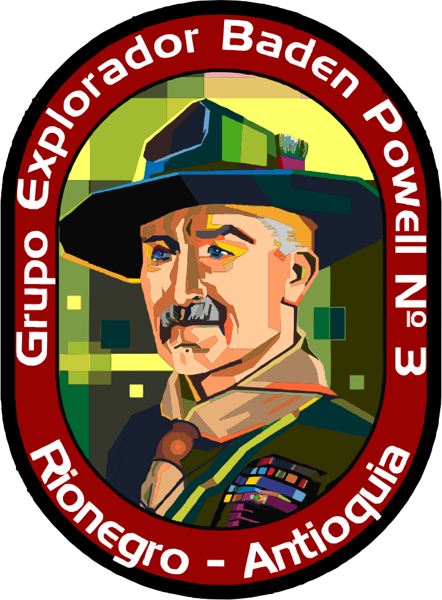En el Audio anterior se hizo mención de honor al Sr. Juan Enrique Upegui, quien fue anteriormente jefe de grupo del Grupo Explorador Banden Powell N|3, y fundador de algunos de los grupos Exploradores de Rionegro; esta mención fue entregada por el Consejo Municipal de Rionegro.
Grupo Explorador Tácticos (GET)
Actualmente el grupo se encuentra ubicado en la vereda Cabeceras, dentro de la institución Educativa Gilberto Echeverri Mejía. En el momento se encuentra dirigido por el jefe de grupo Victor Hugo Monsalve, su horario de reunión son los dias sábados de 8 a.m. a 12 p.m.
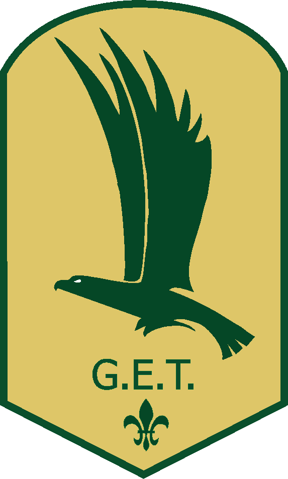Grupo Explorador Excalibur
Actualmente el grupo se encuentra ubicado en el sector los Colegios, dentro de la institución Educativa Escuela Normal Superior de María, abarca los sectores de ojo de agua, san Juaquin y altos de la Pereira. En el momento se encuentra dirigido por la jefe de grupo Luisa Fernanda Ramos Camejo, su horario de reunión son los dias viernes de 4 p.m. a 7 p.m.
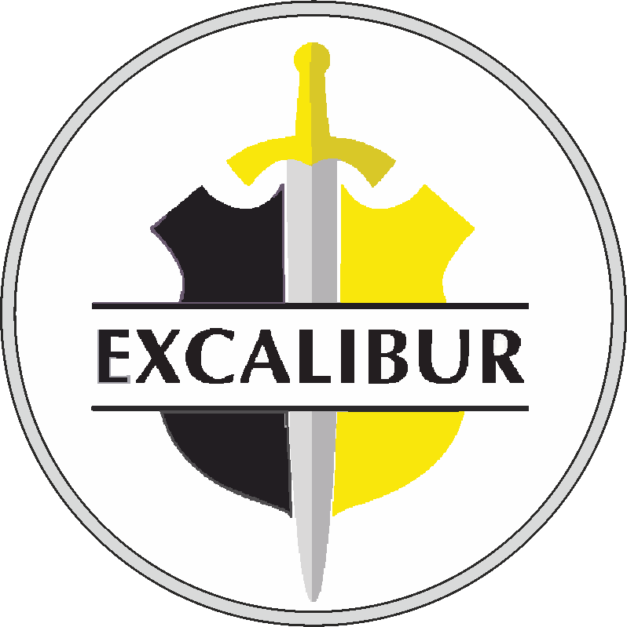Grupo Explorador Santiago de Arma
Actualmente el grupo se encuentra ubicado en el sector de Cuatro Esquinas, dentro de la institución Educativa Jose Fina Muñoz Gonzales Sede Principal, abarca Juan Antonio Murrillo y el Barrio Obrero. En el momento se encuentra dirigido por la jefe de grupo Lissana Carolina Echeverri, su horario de reunión son los dias sábados de 1 p.m. a 4 p.m.
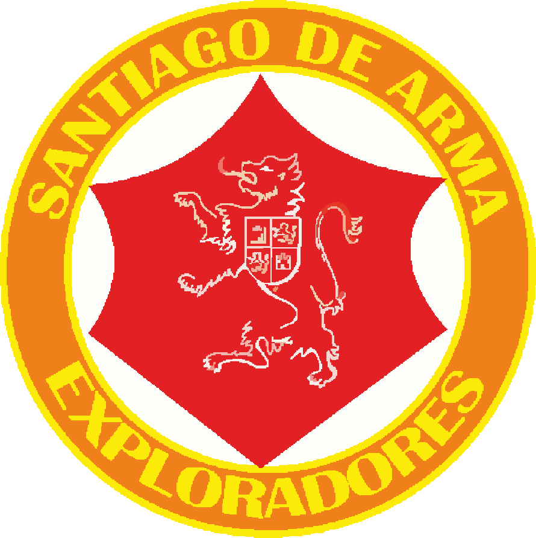Grupo Explorador Spartan
Actualmente el grupo se encuentra ubicado en el sector alto Bonito, abarca los sectores bajo Bonito y la Inmaculada. En el momento se encuentra dirigido por el jefe de grupo Mario Patiño, su horario de reunión son los dias domingos de 10 a.m. a 1 p.m.
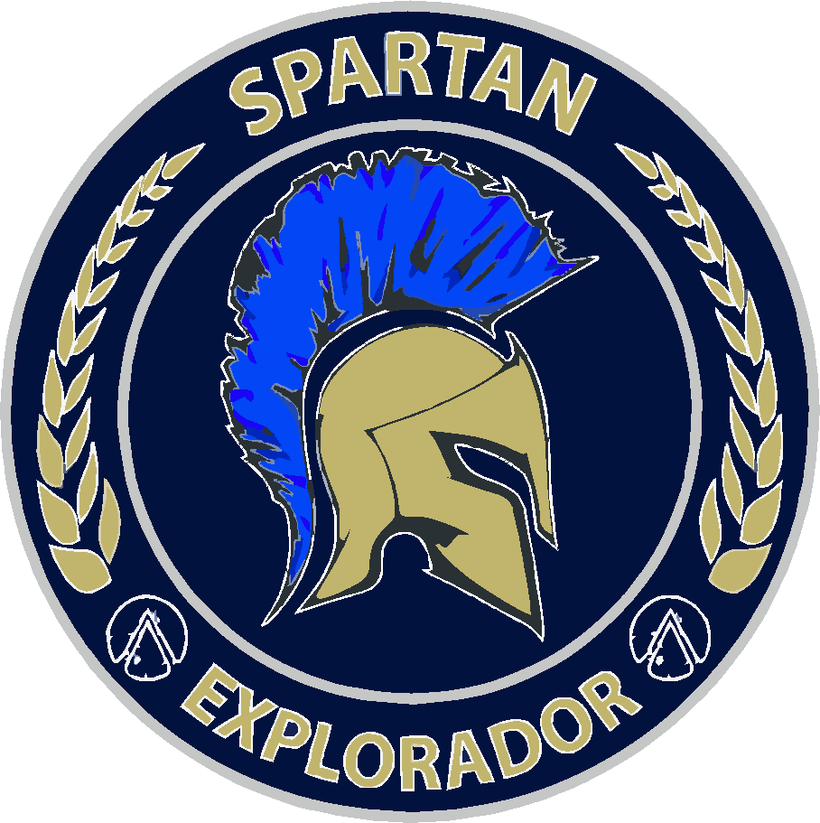Grupo Explorador Galicia
Actualmente el grupo se encuentra ubicado en la vereda Galicia parte Baja, en la placa polideportiva del sector, abarca los sectores Galicia parte alta, Santa Barbara, Rio Abajo y Los Pinos. En el momento se encuentra dirigido por el jefe de grupo Carlos Villa, su horario de reunión son los dias sábados de 10 a.m. a 1 p.m.
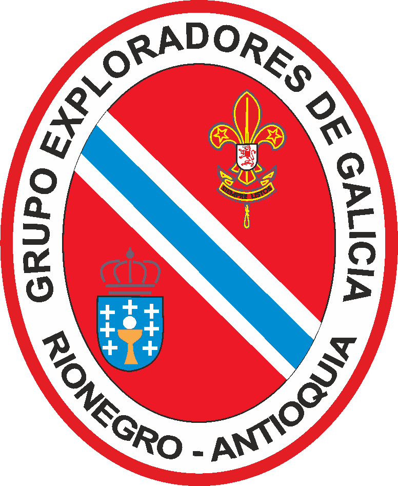Grupo Explorador Impeesa
Actualmente el grupo se encuentra ubicado en la vereda Cuchillas de San José, dentro de la institución Educativa San José de las Cuchillas. En el momento se encuentra dirigido por la jefe de grupo Natalia Echeverri Serna, su horario de reunión son los dias domingos de 9 a.m. a 11:30 a.m.
Grupo Explorador Atlantis
Actualmente el grupo se encuentra ubicado en la cancha el Pinar de la sector la Rochela, abarca el Barrio Santa Ana, el Pinar y el Rosal. En el momento se encuentra dirigido por el jefe de grupo Leandro Aristisabal, su horario de reunión son los dias sábados de 11 a.m. a 4 p.m.
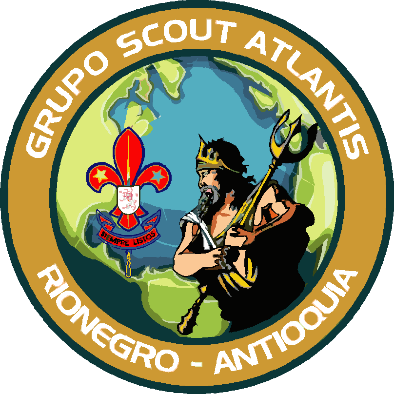Grupo Explorador Andes 31
Actualmente el grupo se encuentra ubicado en la Institución Educativa Liceo Consejo Municipal de Rionegro en el Barrio el Porvenir, sede Principal. En el momento se encuentra dirigido por el jefe de grupo Alexander Gómez, su horario de reunión son los dias sábados de 3 p.m. a 7 p.m.
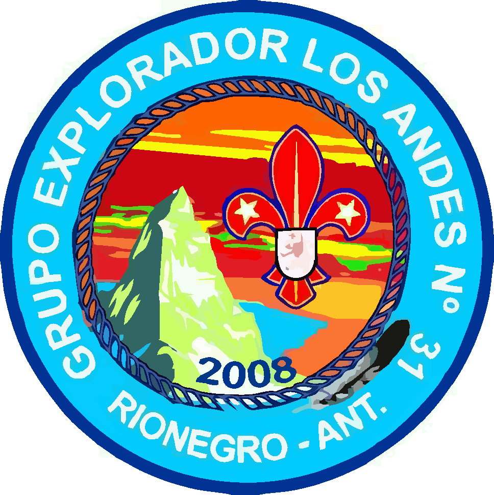Grupo Explorador Pioneros 67
Actualmente el grupo se encuentra ubicado en la Escuela San Pio X de la Cocatedral de San Nicolas de Bari, abarca los sectores del centro de Rionegro, quebrada Arriba, Alto del Medio y la Inmaculada. En el momento se encuentra dirigido por la jefe de grupo Lorena Soto, su horario de reunión son los dias sábados de 1 p.m. a 5 p.m.
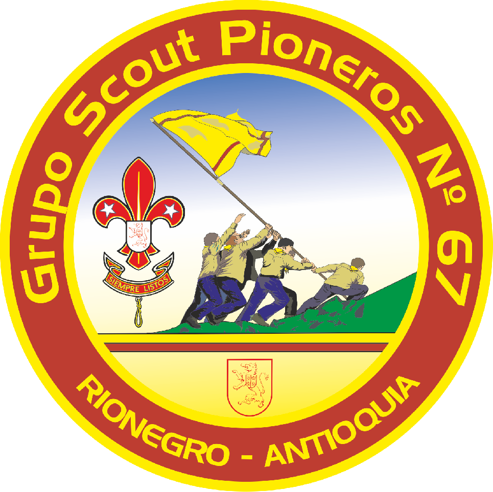Grupo Explorador Sol Naciente
Actualmente el grupo se encuentra ubicado en la institución Educativa Barro Blanco. En el momento se encuentra dirigido por la jefe de grupo Sandra Silva, su horario de reunión son los dias sábados de 8 a.m. a 12 p.m.
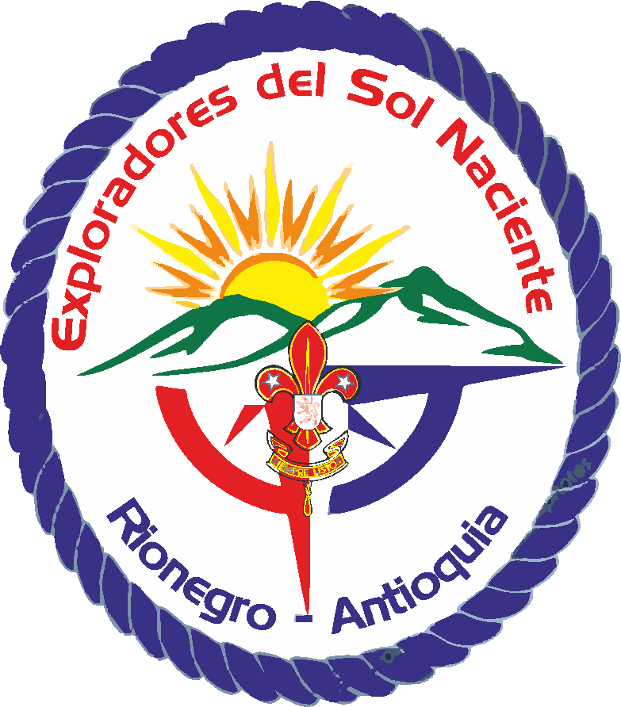Grupo Explorador Alcaravanes
Actualmente el grupo se encuentra ubicado en la parroquia María Madre de Dios en la vereda Sajonia, abarca hasta la vereda Yarumal. En el momento se encuentra dirigido por la jefe de grupo Marta Elena Alzate Hernández, su horario de reunión son los dias sábados de 8 a.m. a 12 p.m.
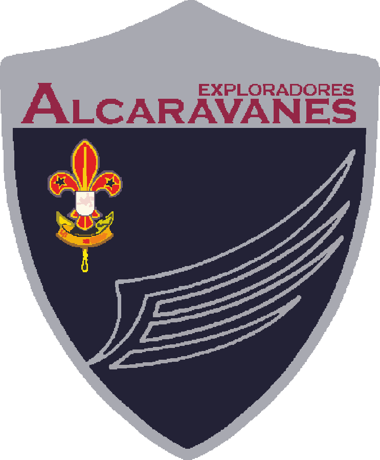